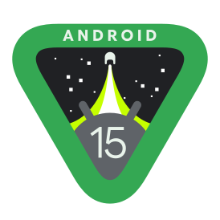

About Android on Wiki-Wiki!
 Home page
Home page
Android ([ˈandrɔɪd]; от греч. ἀνήρ — человек, мужчина + суффикс -oid - человекоподобный робот ; «Андро́ид»[~ 1]) — операционная система для смартфонов, планшетов, электронных книг, цифровых проигрывателей, наручных часов, фитнес-браслетов, игровых приставок, ноутбуков, нетбуков, смартбуков, очков Google Glass[4], телевизоров[5], проекторов и других устройств (в 2015 году появилась поддержка автомобильных развлекательных систем[6] и бытовых роботов).
Изначально разрабатывалась компанией Android, Inc., которую затем приобрела Google[7][8]. Основана на ядре Linux[9] и собственной реализации виртуальной машины Java компании Google. Впоследствии Google инициировала создание альянса Open Handset Alliance, который занимается поддержкой и дальнейшим развитием платформы.
Android позволяет запускать Java-приложения, управляющие устройством через разработанные Google библиотеки. Android Native Development Kit позволяет портировать библиотеки и компоненты приложений, написанные на языке программирования Си и других языках.
В 86 % смартфонов, проданных во всём мире во втором квартале 2014 года, была установлена операционная система Android[10]. На конференции разработчиков в мае 2017 года Google объявила, что за всю историю Android было активировано более 2 млрд Android-устройств. Согласно данным платформы StatCounter по состоянию на ноябрь 2024 года, во всем мире доля Android на рынке составляла 72 % среди пользователей смартфонов.
Wiki-Wiki Links portal
